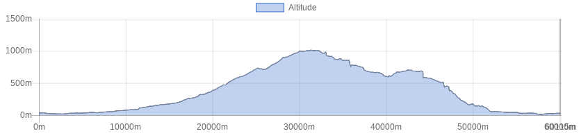

<!doctype html>
<html class="no-js" lang="en" dir="ltr">
  <head>
    <meta charset="utf-8">
    <meta http-equiv="x-ua-compatible" content="ie=edge">
    <meta name="viewport" content="width=device-width, initial-scale=1.0">
    <title>Foundation for Sites</title>
    <link rel="stylesheet" href="css/foundation.css">
    <link rel="stylesheet" href="css/app.css">
  </head>
  <style type="text/css">
  
  
h1.blu {
background-color: #2f5a55;
color: white;
font-size: 1.75rem; 
}

h1.verde {
background-color: #008e80;
color: white;
font-size: 1rem; 
}


h1.bianco {
background-color: white;
color: #506487;
font-size: 1rem; 
}

button.radius, .button.radius {
    border-radius: 3px; font-size:12px;
    }
  button.round, .button.round {
    border-radius: 1000px; font-size:1.2em; background-color:#3fa537}

</style>
  <body>
    <div class="grid-container">
      <div class="grid-x grid-padding-x">
        <div class="large-12 cell">
          <h1 class="verde">&nbsp;</h1>
        </div>
      </div>
      
       <div class="grid-x grid-padding-x">
        <div class="large-12 cell">
        <table>
        <tr>
        <td></td>
        <td><b>Tour of the Valleriana
</b></td>
        </tr>
        </table>
        
        </div>
      </div>
      
      <div class="grid-x grid-padding-x">
        <div class="large-12 cell">
          <h1 class="verde">&nbsp;</h1>
        </div>	
      </div>
      
      <!------ inizio tabella --->
       <div class="grid-x grid-padding-x">
        <div class="large-12 cell">
        <table>
        
         <tr>
        <td><b>Difficulty level</B></td>
        <td></td>
        </tr>
        
        <tr>
        <td><b>Lenght</B></td>
        <td>60 Km</td>
        </tr>
        
        <tr>
        <td><b>Gap</B></td>
        <td>1358 + / 1358 -</td>
        </tr>

        <tr>
        <td><b>Season</B></td>
        <td>All year</td>
        </tr>

        <tr>
        <td><b>Ground</B></td>
        <td>Gravel road, paved road, trail</td>
        </tr>
        
        <tr>
        <td><b>Description</B></td>
        <td>stile roadbook</td>
        </tr>
        
        
        <tr>
        <td><b>Info on track</B></td>
        <td>
        You leave Montecatini Terme and reach the town of Pescia.
You ride your bike backwards along the river Pescia, still on unpaved road which after the crossroads for Sorana becomes pleasant and not congested at all.
In the shade of  chestnut woods you continue travelling along the river Pescia upwards until reaching the hamlet called Lanciole first and Pontito then.
Before the hamlet of Pontito, you turn right, following the tourist direction that says “Uso di sotto”. This leads us directly to the village of Croce a Veglia.
After some hairpin turns and a small Church, the road becomes unpaved.
You may travel upwards until you reach the prairies at the feet of the Mountain called Granaio from where it is possible to admire a unique view over the Apennine and the entire valley, the so called Svizzera Pesciatina.
Once reached the highest point of the itinerary, the road continues slightly and gently downwards heading towards the town called Castello di Collodi; first surrounded by beech tree woods, then by chestnut tree woods and finally Mediterranean scrub.
After about 3kms where the ascent has come to an end you may stop at the mountain shelter called Uso di Sotto, where it is possible to have refreshments. Ask for opening hours.
Once reached the hamlet called Collodi Castello, you are back on paved roads. You then may turn to the left and take the famous “via della Fiaba”, a both paved and unpaved road that leads directly to the town of Pescia.


        </td>
        </tr>

       
       <tr>
        <td><b>Lodging</B></td>
        <td><a href="http://www.bikeexperience.tuscany.it/montecatini-bike-hotels/">Link</a></td>
        </tr>
        
        
        <tr>
        <td><b>Eating</B></td>
        <td>
     Ristorante Da Carla<br>
Loc. Ponte di Castelvecchio<br>
51017 Pescia (PT)<br>
Phone <a href="tel:0572400080">0572 400080</a><br>
<a href="http://www.ristorantedacarla.it/">Website</a>

        
</td>
        </tr>
        
        <tr>
        <td><b>Starting point</B></td>
        <td>
        
      By car or public transport
</td>
        </tr>
        
        </table>
        
        </div>
      </div>
      <div class="responsive-embed" style="width:75%; margin-left:auto; margin-right:auto;">
                <iframe  src="./sentieri/monte_valleriana.html" frameborder="0" allowfullscreen></iframe>
        </div>
    
   <div class="grid-x grid-padding-x">
        <div class="large-12 cell"><center>
          </center>
        </div>
      </div>
  
  
  <div class="grid-x grid-padding-x">
        <div class="large-12 cell"><center>
        <a href="mtb.html" class="button   round">Back</a><center>
        </div>
      </div>
    </div>

    <script src="js/vendor/jquery.js"></script>
    <script src="js/vendor/what-input.js"></script>
    <script src="js/vendor/foundation.js"></script>
    <script src="js/app.js"></script>
  </body>
</html>
